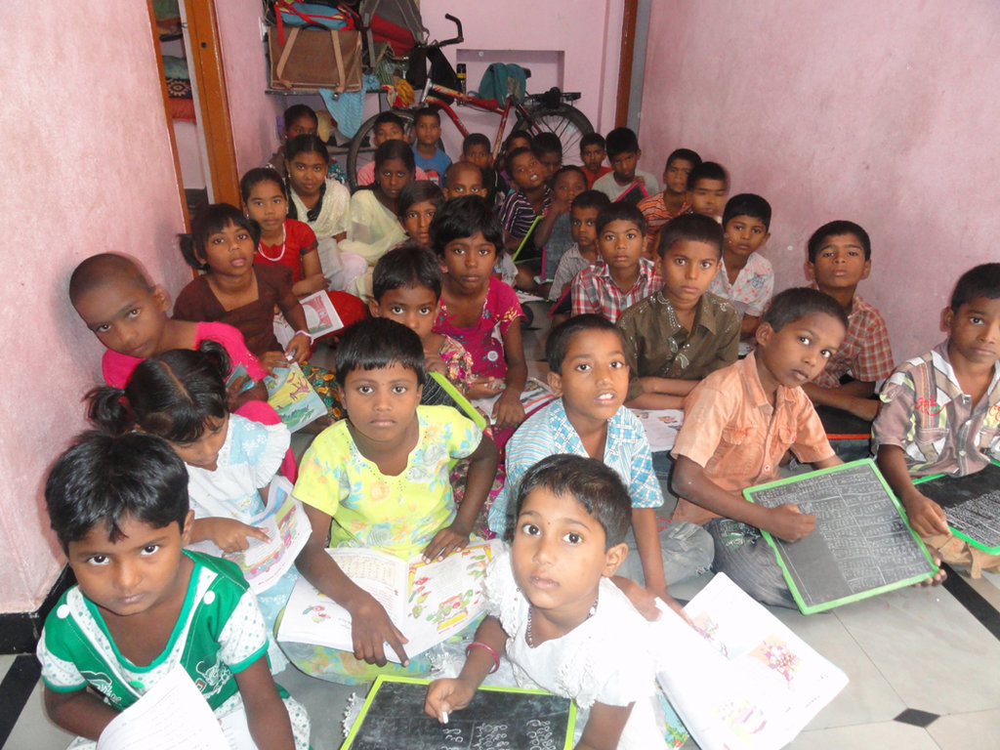

Orphanages as a Form of Social Protection for Children

Snakes and Ladders Game as a Tool for Boosting Teenagers’ Self-Efficacy in Orphanages

Explore our blog for a deeper look at the impact of our work and the people we touch.